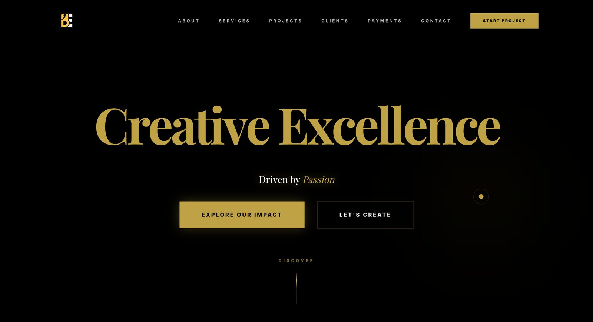
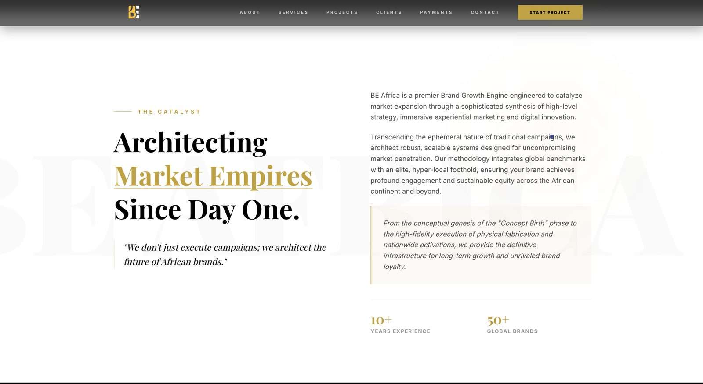
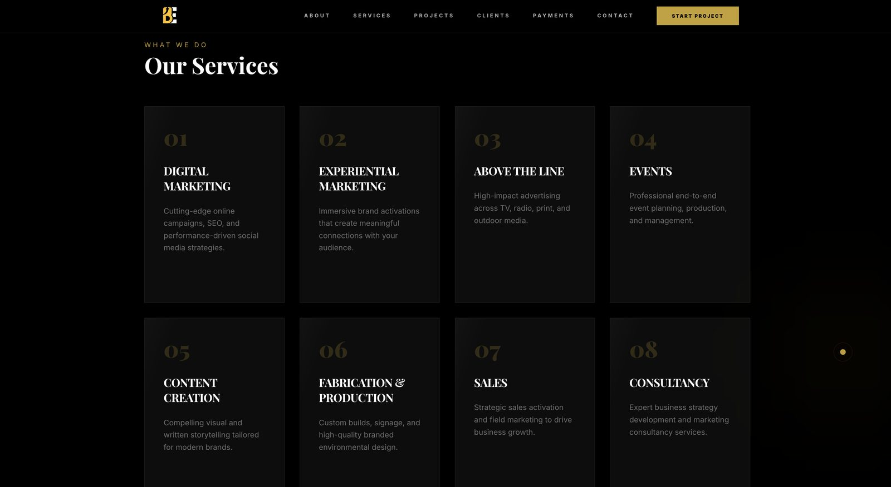
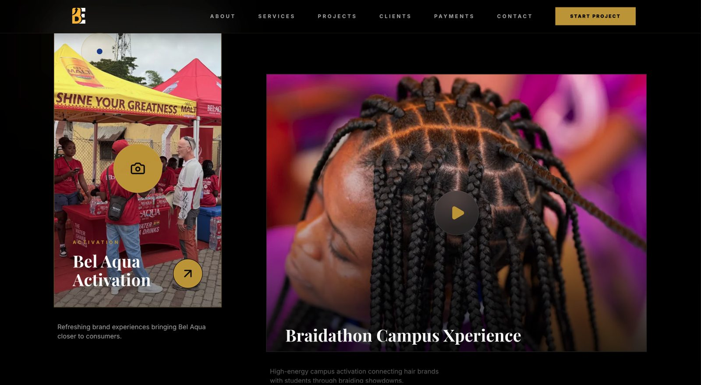
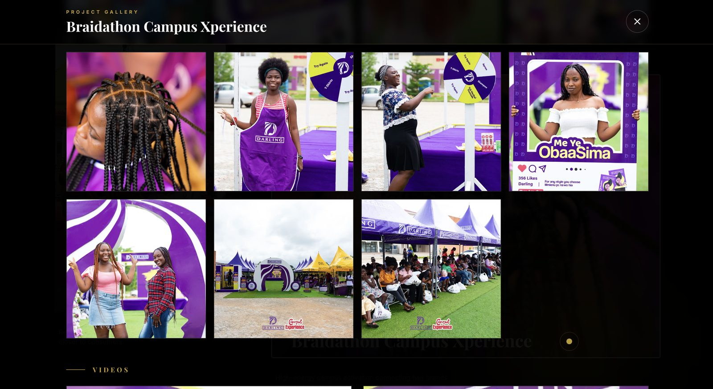
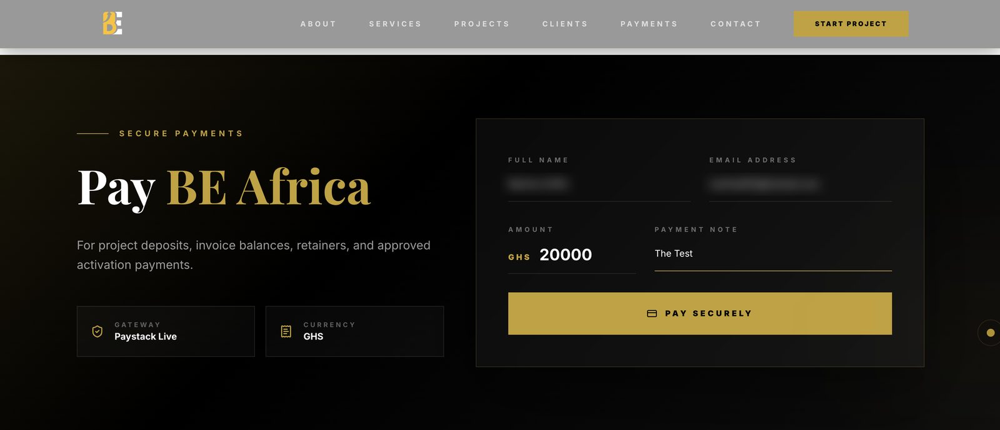

BE Africa
A Pan-African creative and marketing agency whose clients include Nivea, Unilever, Hennessy and Darling. The site had to look like that calibre of work — and take money for it, safely.
Live site: beafricagh.com
The brief
BE Africa sells brand experience — activations, fabrication, events, campaigns across Ghana and the continent. An agency that pitches immersive work cannot have a flat website; the site is itself a portfolio piece, and prospective clients judge the agency by it before reading a word.
The second requirement was less glamorous and more consequential. The agency needed to collect project deposits, invoice balances, retainers and activation payments directly, without chasing bank transfers. That turns a marketing site into something that handles money, and changes what "done" means.
What I built
WebGL fluid background
A real-time fluid simulation in three.js reacting to cursor movement — viscosity, Poisson pressure solving and BFECC advection — rather than a looping video pretending to be interactive.
Single-page narrative
About, eight services, selected projects, client wall, payments and contact on one anchored scroll, so the pitch reads in one continuous motion.
Project gallery
Activation work for Nivea, Bel Aqua, Darling, Tampico and Bullet in a lightbox carrying both stills and video per campaign, with the media layer kept in data rather than hardcoded into components.
Trust signals on the form
Gateway and currency stated plainly beside the payment fields. Someone about to send five figures in cedis to an agency should be able to see what they're paying into without guessing.
Paystack payments
Inline checkout in cedis with a named payer, email, amount and payment note — then verified server-side before anything is treated as paid.
Contact via server actions
Enquiries submitted through React server actions and delivered by transactional email, with no client-exposed endpoint to abuse.
Motion & detail
Framer Motion transitions, rotating headline type and a custom cursor — tuned to stay the right side of the line between crafted and exhausting.
The payment flow, properly
This is the part worth dwelling on, because it's where most implementations quietly go wrong.
Paystack's popup fires an onSuccess callback in the browser. It is
enormously tempting to treat that callback as proof of payment and show a success screen.
A client-side callback is a claim, not evidence. Anyone can call it from a console. Nothing is paid until the server has asked Paystack directly and been told so.
Browser
├─ generate reference BEA-{timestamp}-{random}
├─ convert amount → subunit (pesewas ×100)
└─ open Paystack popup
│ onSuccess(transaction)
▼
POST /api/paystack/verify { reference, expectedAmount, currency }
│
│ GET api.paystack.co/transaction/verify/{ref}
│ Authorization: Bearer PAYSTACK_SECRET_KEY ← server only
▼
Match all three, or it isn't paid
├─ status === "success"
├─ amount === expected subunit amount
└─ currency === expected currency
│
▼
verified · pending · cancelled · error → distinct UI states
Why each check earns its place
- Status catches abandoned and failed transactions that still fire callbacks.
- Amount is compared in minor units against what the server expected, so a tampered client amount fails the match instead of being trusted.
- Currency stops a transaction settled in the wrong currency from passing as a valid cedi payment.
Failing honestly
If the secret key isn't configured, the endpoint returns 202 pending — not a success, not a hard failure. The payment may well have gone through; the server simply cannot prove it yet. The UI says exactly that and surfaces the reference so it can be reconciled by hand. Silently claiming success on an unverifiable payment is how a client ends up delivering work nobody paid for.
The reference format is deliberate too: BEA-{timestamp}-{random} is
sortable, collision-resistant and instantly recognisable in a Paystack dashboard full of
transactions from other merchants.
The harder parts
Keeping secrets out of a static build
Paystack uses two keys: a public key that belongs in the browser and a secret key that must never reach it. The build pipeline's secret scanner flags anything key-shaped in output, so the public key is explicitly declared as safe while the secret stays a server-only environment variable, read exclusively inside the verify route.
A fluid simulation that doesn't melt phones
Per-frame WebGL fluid solving is the kind of feature that looks spectacular on a desktop and destroys a mid-range Android battery. Resolution, solver iterations and bounce behaviour are all parameterised so the effect can be dialled down rather than switched off wholesale.
Inverting the palette without losing the thread
The hero is near-black with gold display type; the About section flips to white and stays there through the agency's own pitch, then drops back to black for services and work. Switching ground colour mid-scroll usually reads as two sites stitched together — holding it together took the type and the gold accent doing consistent work across both.
Restraint in a maximalist brief
Custom cursor, rotating type, fluid background, scroll motion — each defensible alone, and collectively capable of making a site unusable. The discipline was deciding what not to animate.
Stack
Screens






The payer name and email in the payment capture are blurred. No transaction was completed.